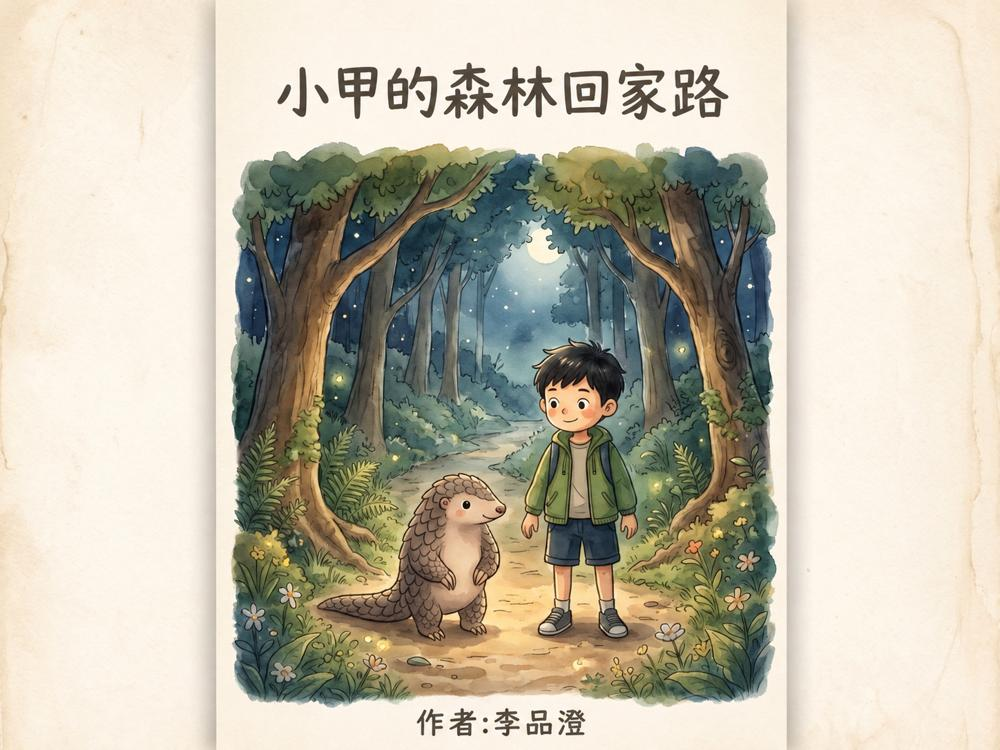
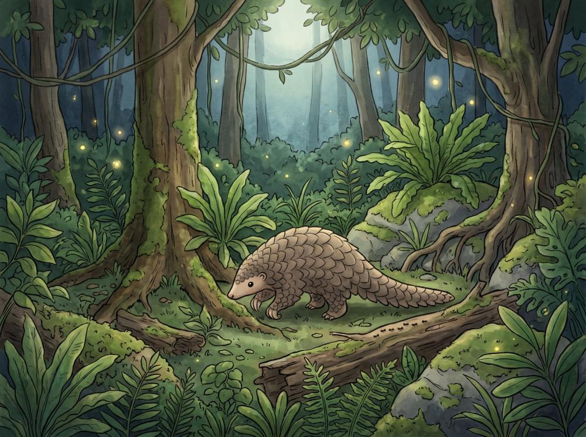
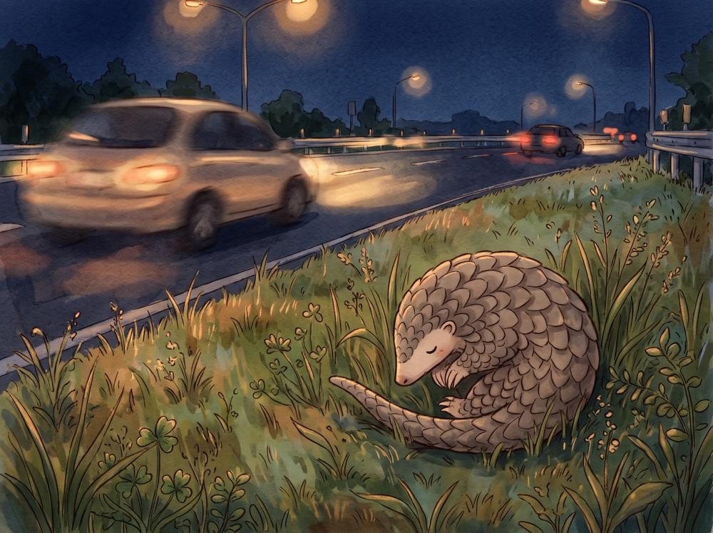
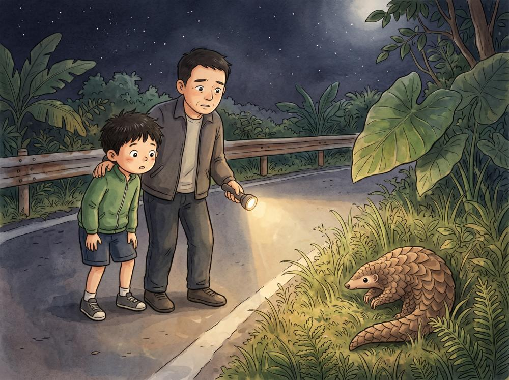
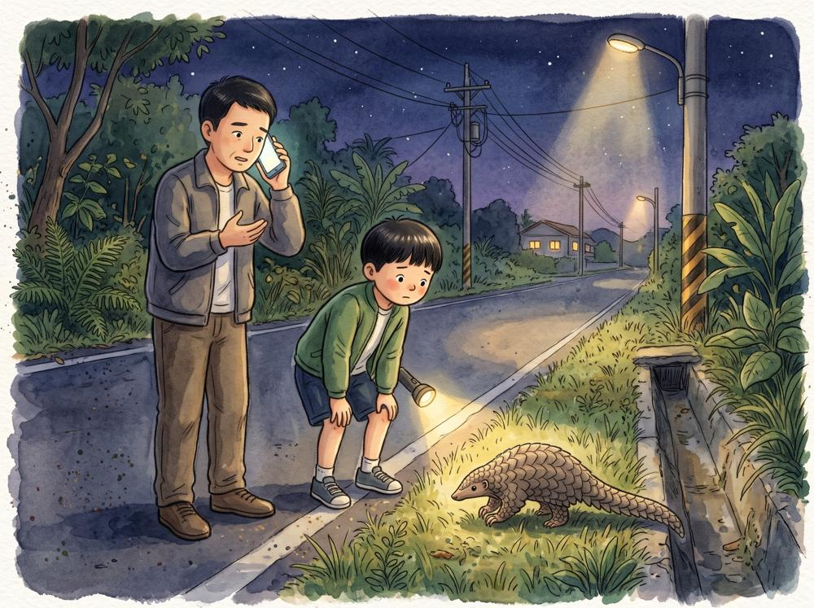
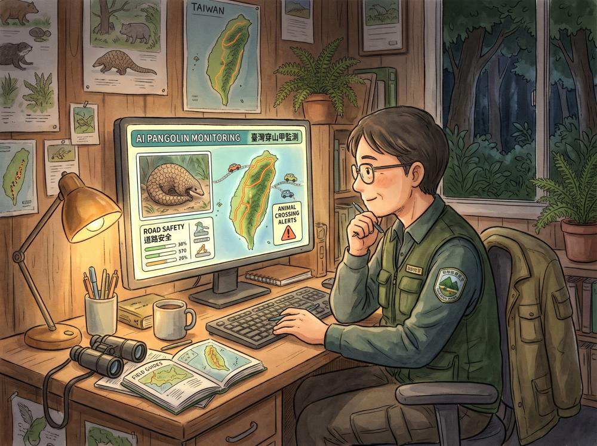
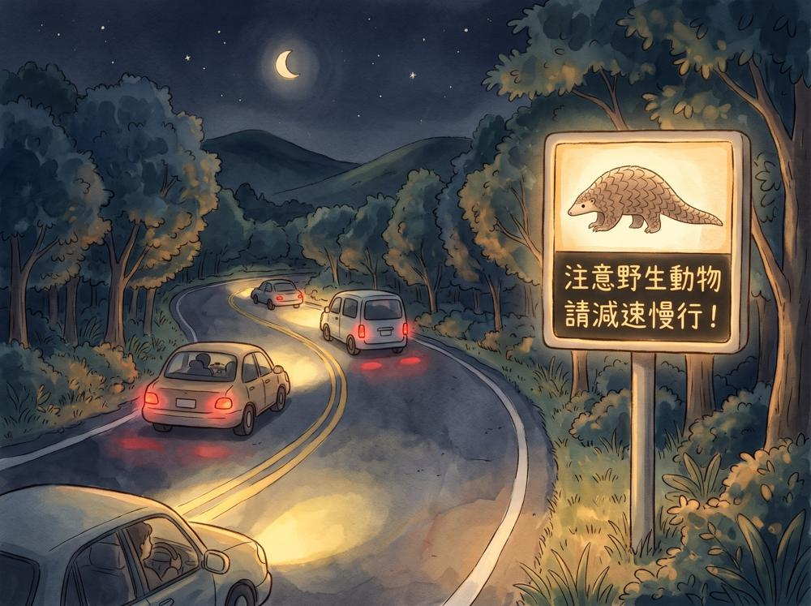
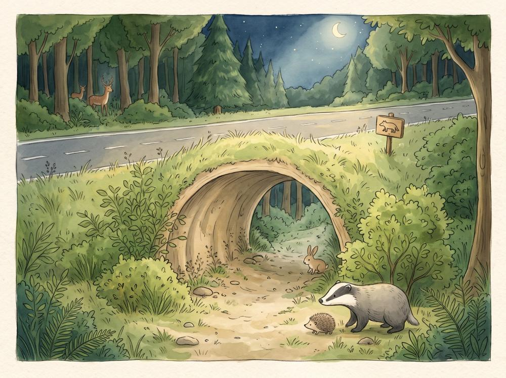
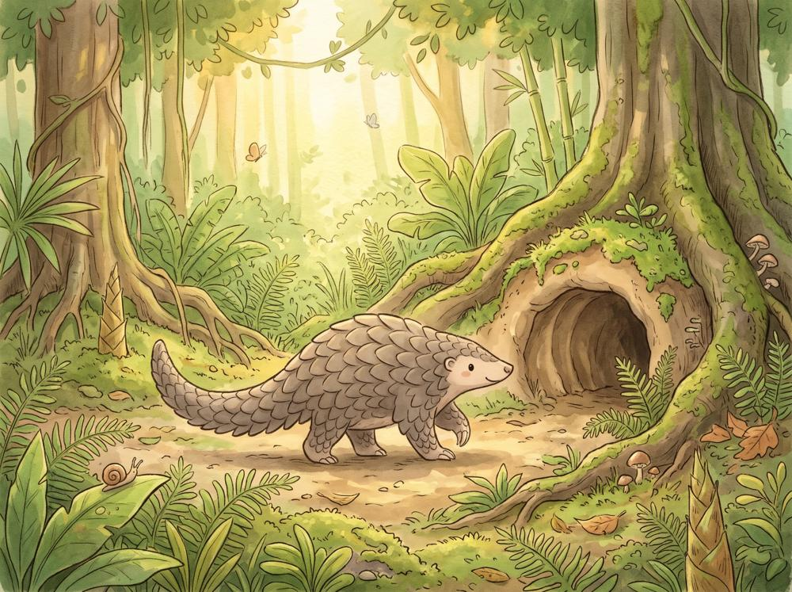
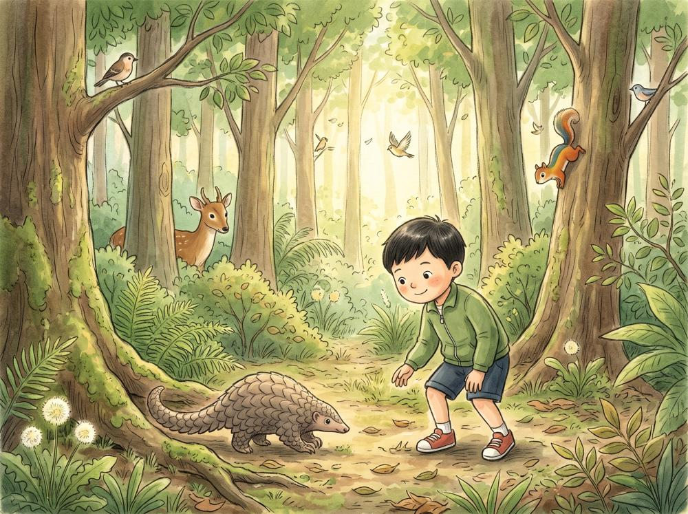

點擊書本左右側或下方按鈕來翻頁


在一座綠油油的森林裡，住著一隻可愛的小穿山甲，名字叫小甲。每到夜晚，小甲就會走出洞穴，尋找最喜歡的螞蟻和白蟻。
有一天，小甲發現森林附近變得不一樣了。
原本安靜的地方出現了道路與施工圍籬，熟悉的小路也被擋住了。

「我的家在哪裡呢？」小甲沿著草叢慢慢前進，卻走到一條車子很多的馬路旁。看見汽車快速經過，小甲害怕得縮成一顆球。

這時，小男孩小安和爸爸剛好經過附近。「爸爸，你看！那裡有一隻穿山甲！」小安很擔心小甲，但他知道不能隨便觸碰野生動物。

「爸爸，我們可以幫助牠嗎？」爸爸點點頭，拿出手機聯絡保育人員。小安希望有人能幫助小甲找到安全的回家路。

保育人員查看附近的 AI 動物監測系統。透過攝影機與影像辨識，系統發現了穿山甲出沒的資訊，提醒大家注意道路安全。

道路旁的智慧警示燈亮了起來。「注意野生動物，請減速慢行！」駕駛們看見提醒，紛紛放慢車速。

保育人員發現，附近有一條可以通往森林另一側的生態通道。「原來還有一條安全的路！」小安開心地說。大家保持安靜，讓小甲慢慢尋找通道入口。
小甲小心地走向通道，先用鼻子聞了聞四周。
確定沒有危險後，牠勇敢地一步一步向前走。
通道的另一端，就是熟悉的森林。

穿過通道後，小甲終於回到熟悉的森林。牠聞到了泥土和樹木的味道，也找到了自己的洞穴。知道小甲平安回家，小安心裡充滿了喜悅。

從那天開始，小安更加珍惜森林裡的每一個生命。他明白了，科技可以幫助我們保護動物，但真正守護自然環境，還需要大家一起努力。
「一起守護森林，讓每隻動物都能安心回家！」